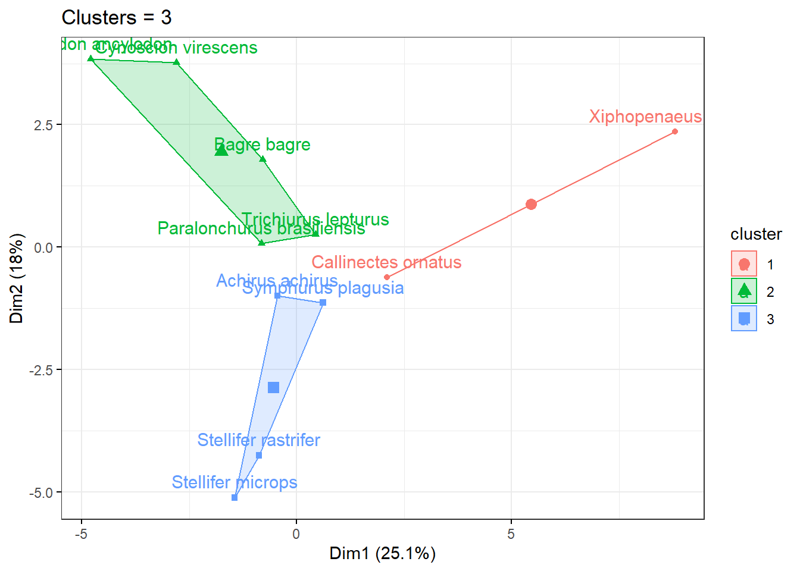
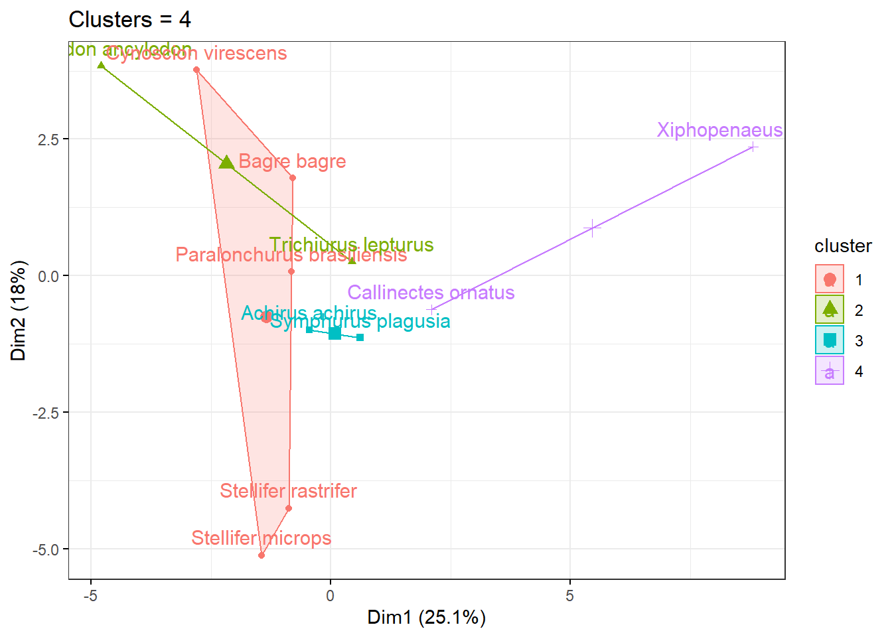
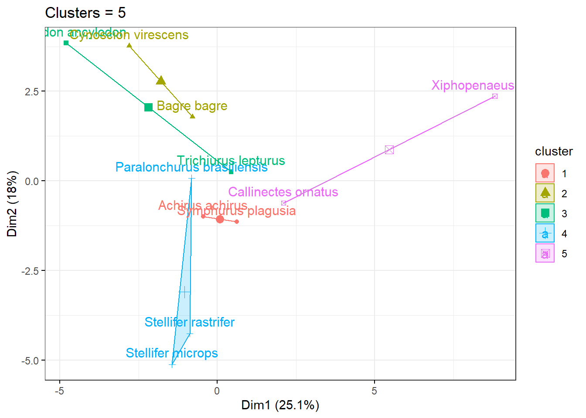
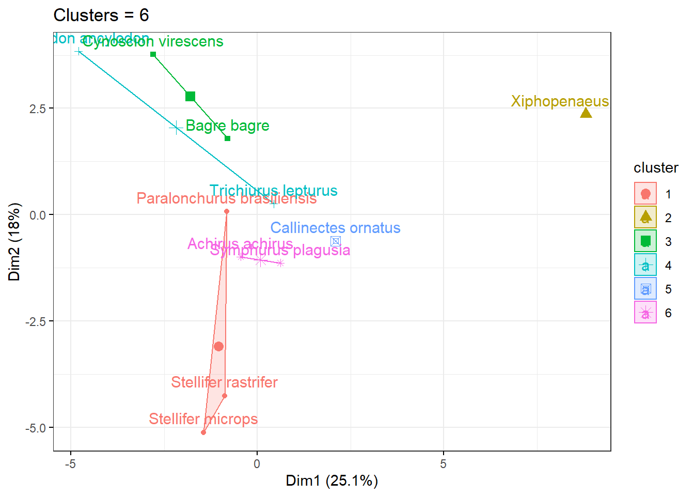
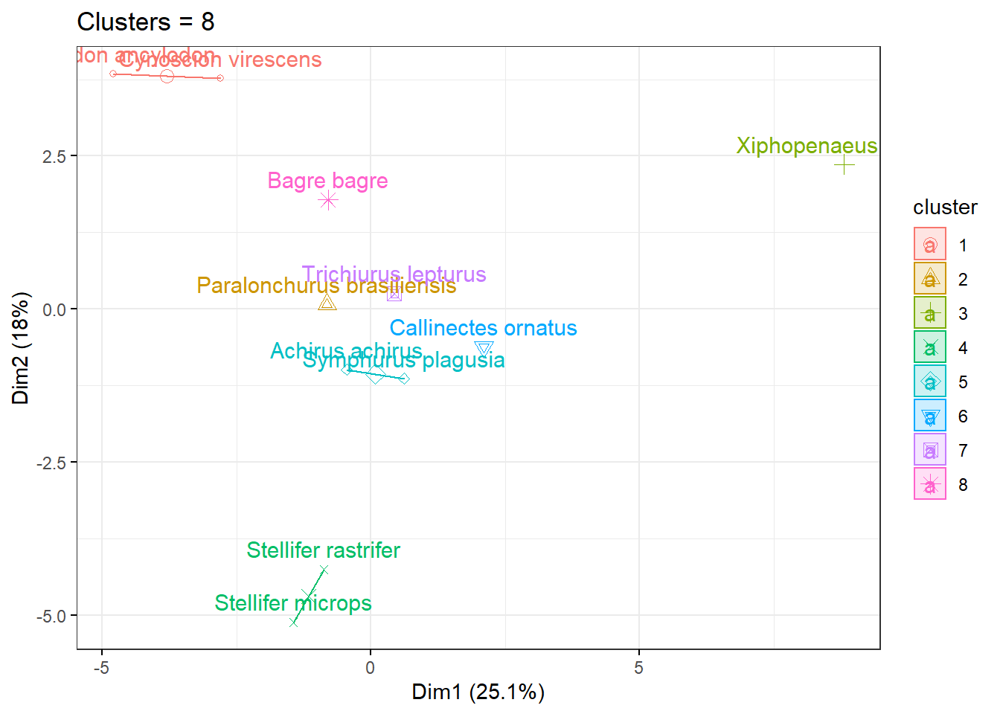
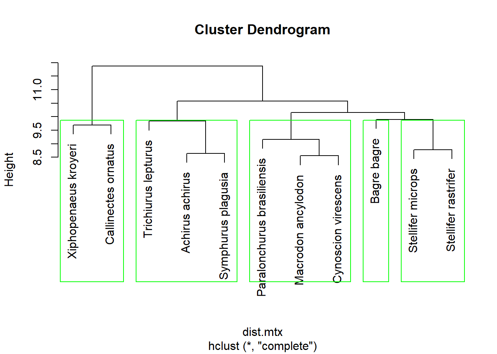
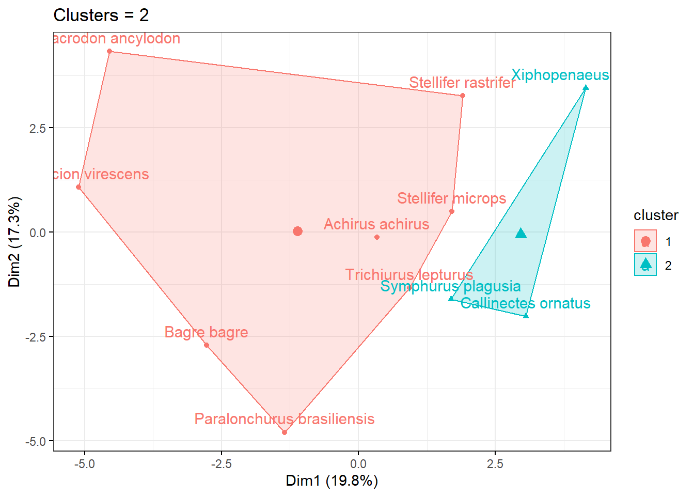
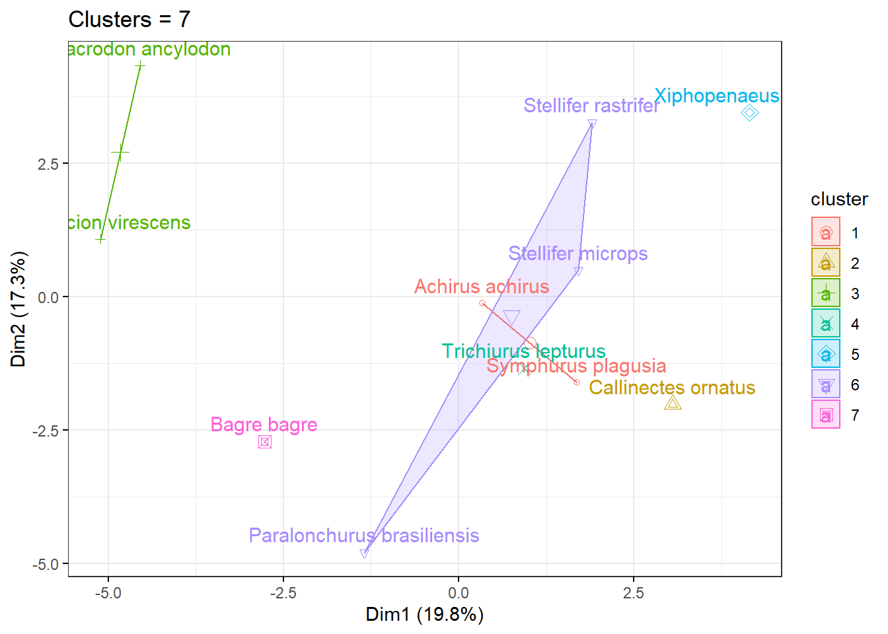
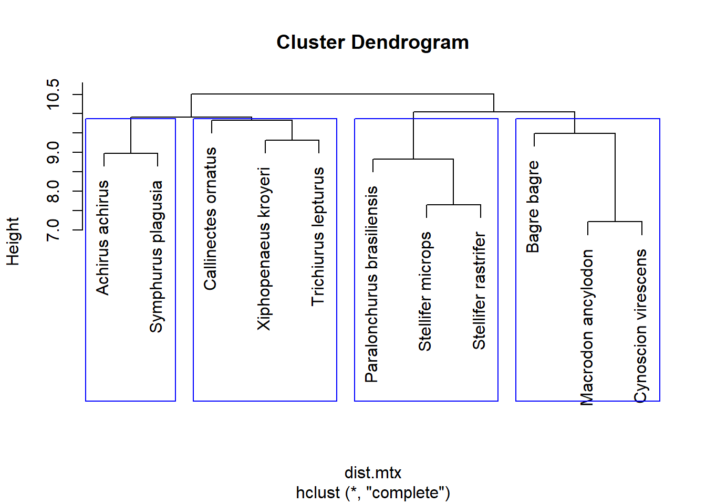

12 CLUSTER ANALYSIS
K-means finds fixed cluster points (means) in the dataset and compares the distance between each observations and those fixed points. While hierarchical clustering starts by placing each observation in their own cluster (i.e. cluster of 1) and step-wise merges by looking at the differences between the different adjacent points. Thus adding information about structure of the data, unlike K-means. Thus hierarchical clustering looks at both similarity of points and clusters.
12.1 Prop.Weight - Scaled Data
12.2 K-Means Clustering
12.2.1 K-means Clustering
# Fitting models
# # K-means = 2
kmeans.2 <- kmeans(prop.wt.kmeans,
centers = 2,
nstart = 25)
# K-means = 3
kmeans.3 <- kmeans(prop.wt.kmeans,
centers = 3,
nstart = 25)
# K-means = 4
kmeans.4 <- kmeans(prop.wt.kmeans,
centers = 4,
nstart = 25)
# K-means = 5
kmeans.5 <- kmeans(prop.wt.kmeans,
centers = 5,
nstart = 25)
# K-means = 6
kmeans.6 <- kmeans(prop.wt.kmeans,
centers = 6,
nstart = 25)
# K-means = 7
kmeans.7 <- kmeans(prop.wt.kmeans,
centers = 7,
nstart = 25)
# K-means = 8
kmeans.8 <- kmeans(prop.wt.kmeans,
centers = 8,
nstart = 25)
# Printing k-means = 8 & 11
kmeans.5; kmeans.8 K-means clustering with 5 clusters of sizes 2, 2, 3, 2, 2
Cluster means:
[,1] [,2] [,3] [,4] [,5] [,6]
1 -0.1784857 -0.2769132 -0.3176952 -0.4007908 -0.3935297 -0.23953358
2 -0.7199819 -0.8285658 -0.5754706 -0.4065093 -0.7028261 0.04877636
3 -0.3284525 -0.1542280 0.1638525 -0.2060509 -0.2451039 0.10303244
4 -0.2627824 0.3917899 0.6597675 0.9453262 0.7384568 0.68521697
5 0.7198242 0.3798614 0.1772517 0.0654151 0.3528394 -0.29865771
[,7] [,8] [,9] [,10] [,11] [,12]
1 -0.23900075 -0.2819158 -0.1115897 -0.39151215 -0.4056595 -0.4009235
2 -0.69794247 -0.3797488 -0.6433529 1.22868559 0.2270416 0.3371342
3 -0.18447279 2.0377742 -0.9564292 -0.37289127 0.5422701 0.2750524
4 1.89528169 -0.3070533 -0.6403402 0.01574125 1.1647342 1.0458560
5 -0.05601536 -1.0373176 3.1203248 -0.12984492 -0.4861345 -0.1595314
[,13] [,14] [,15] [,16] [,17] [,18]
1 -0.34486682 0.2850300 -0.27842048 -0.3572305 -0.283499538 2.5951617
2 -0.38175336 -0.3749410 0.07295052 -0.5969610 -0.588706623 -0.6628445
3 -0.02821127 0.9477988 0.68187188 -0.1822236 0.001513391 -0.4877279
4 1.67718442 -0.5133415 0.29688247 -0.6568691 -0.743731517 -0.4816656
5 -0.25305144 -0.6573761 -0.71694398 0.4472473 0.456786298 -0.3282291
[,19] [,20] [,21] [,22] [,23] [,24]
1 -0.4056595 -0.3685377 -0.354560385 -0.4056595224 -0.27216351 -0.3715678
2 0.3935754 0.3069349 -0.005097214 0.0005485832 -0.56359308 -0.5566612
3 0.9548040 -0.7698295 -0.854456127 -0.5649830154 0.07848618 -0.9907101
4 -0.7654008 -0.2901591 -0.803033688 -0.9429161076 -0.73426288 -0.8354531
5 0.1752309 0.6008367 0.799009267 0.7038126948 0.38363253 1.1676883
[,25] [,26] [,27] [,28] [,29] [,30]
1 -0.3912164 -0.3412633 -0.3132417 -0.2449813 -0.3766800 -0.03418594
2 1.4149187 0.5381242 -0.4566767 -0.2139353 -0.7951076 0.46250781
3 -0.4551246 0.1847223 0.7961012 -0.4946071 -0.3015307 0.21126413
4 -0.3803313 -0.5507454 -0.6334183 -0.9071108 -0.7251807 0.13353895
5 -0.1335137 -0.4068200 -0.2089248 0.8127658 0.6238726 -0.44604606
[,31] [,32] [,33] [,34] [,35] [,36]
1 -0.07361273 -0.003977266 -0.1303145 -0.1022234 1.2077549 -0.0778942
2 3.50712632 0.699149212 0.8749814 0.5488191 0.6818816 -0.2107303
3 -0.52907325 0.974234975 -0.3391749 -0.4180880 -0.5343848 0.7965453
4 -0.69881893 -0.700643240 0.5529441 0.3755861 -0.4718563 -0.1040939
5 -1.15792114 -0.950840562 -0.3414783 -0.1230744 -0.2828936 -0.3567995
[,37] [,38] [,39] [,40] [,41] [,42]
1 0.5059352 0.41261855 3.6060338 -0.27517549 -0.1671819 1.3687894
2 0.4340395 -0.09435029 -0.4367705 -0.43542596 -0.3304766 0.2694443
3 -0.1272162 1.42226830 -0.3920032 0.17144955 -0.1281303 0.3324899
4 0.7159840 0.05948132 -0.4948433 -0.11182073 -0.3769306 0.5430624
5 -0.5321758 -0.86392799 -0.0242867 0.02734793 0.1811886 -0.6411723
[,43] [,44] [,45] [,46] [,47]
1 -0.2455696 -0.2831441 -0.21893244 0.6124744 -0.23448850
2 0.2178883 0.5774891 -0.58978900 -0.7528310 0.15903251
3 -0.8208911 0.1073339 -0.17541075 0.7564506 -0.49791105
4 1.1864180 0.3800385 1.09606587 -0.4908823 0.06432829
5 0.1738917 -0.4591097 -0.09389323 -0.3672500 0.14440240
Clustering vector:
Paralonchurus brasiliensis Macrodon ancylodon
3 2
Bagre bagre Stellifer microps
4 3
Stellifer rastrifer Achirus achirus
3 1
Xiphopenaeus kroyeri Cynoscion virescens
5 4
Callinectes ornatus Trichiurus lepturus
5 2
Symphurus plagusia
1
Within cluster sum of squares by cluster:
[1] 37.34582 37.86880 82.08703 41.95987 46.98213
(between_SS / total_SS = 49.8 %)
Available components:
[1] "cluster" "centers" "totss" "withinss" "tot.withinss"
[6] "betweenss" "size" "iter" "ifault" K-means clustering with 8 clusters of sizes 1, 1, 2, 2, 1, 1, 2, 1
Cluster means:
[,1] [,2] [,3] [,4] [,5] [,6]
1 0.4610916 -0.1275491 -0.22673728 -0.2520700 -0.2544524 -0.2749405
2 -0.1212069 0.6418894 0.61445887 1.7972854 0.1554507 1.2173563
3 -0.7444330 -0.5793805 -0.03907057 -0.1754345 0.1424615 0.3108265
4 -0.1784857 -0.2769132 -0.31769516 -0.4007908 -0.3935297 -0.2395336
5 -0.3554556 -0.3566802 -0.36772389 -0.3687825 -0.3691122 -0.3710226
6 0.9785568 0.8872720 0.58124071 0.3829002 0.9601312 -0.3223749
7 -0.2106495 -0.1469231 -0.36320155 -0.1430696 -0.5523421 0.2056701
8 -0.5640586 -0.1688380 1.21796045 -0.3320135 0.3693727 -0.1022430
[,7] [,8] [,9] [,10] [,11] [,12]
1 -0.17450761 -0.1299814 6.6271534 -0.2759339 -0.2420695 0.02779736
2 4.47847290 -0.2720003 -0.2843345 0.9194900 0.5383994 1.78246022
3 -0.85638591 -0.4312685 -0.9764463 -0.1104681 1.2744434 0.65959115
4 -0.23900075 -0.2819158 -0.1115897 -0.3915122 -0.4056595 -0.40092349
5 -0.37102263 -0.2390670 -0.3301590 1.7903000 -0.3037347 -0.33566223
6 0.06247689 -1.9446538 -0.3865038 0.0162441 -0.7301996 -0.34686007
7 0.06001928 2.0171144 -1.1321085 -0.7574128 -0.0457938 -0.43672243
8 -0.67345692 2.0790940 -0.6050707 0.3961518 1.7183979 1.69860197
[,13] [,14] [,15] [,16] [,17] [,18]
1 -0.24443391 -0.2198632 -0.2167306 -0.2366535 0.2633550 -0.15286766
2 1.53287518 -0.7338147 0.9941593 -0.5020254 -0.4787543 0.06186873
3 0.60317024 -0.4053625 -0.2054470 -0.8298522 -0.9343514 -1.07823584
4 -0.34486682 0.2850300 -0.2784205 -0.3572305 -0.2834995 2.59516170
5 -0.14835352 -0.2320253 0.1564007 -0.3459305 -0.3174192 -0.19441733
6 -0.26166898 -1.0948889 -1.2171573 1.1311481 0.6502176 -0.50359049
7 0.05228446 1.3554380 1.2373286 0.0320243 0.3091418 -0.39486332
8 -0.18920272 0.1325203 -0.4290416 -0.6107195 -0.6137435 -0.67345692
[,19] [,20] [,21] [,22] [,23] [,24]
1 -0.13825050 -0.10557730 -0.09742825 -0.03130275 0.3133883 -0.08912307
2 -0.86063230 0.04784978 -0.80991865 -0.86063230 -0.4433258 -0.64570638
3 0.07865080 0.11239356 -0.75624391 -0.56969093 -0.9199695 -1.01533831
4 -0.40565952 -0.36853773 -0.35456038 -0.40565952 -0.2721635 -0.37156780
5 -0.04031996 -0.23908528 0.70614466 0.11527912 -0.3124470 -0.10784577
6 0.48871224 1.30725079 1.69544679 1.43892814 0.4538767 2.42449973
7 -0.88421623 -1.07309434 -0.94495573 -0.64864601 0.4544577 -1.14933666
8 4.63284458 -0.16329978 -0.67345692 -0.39765703 -0.6734569 -0.67345692
[,25] [,26] [,27] [,28] [,29] [,30]
1 -0.21437136 -0.2561054 -0.1630599 0.09598461 -0.2422117 -0.05451385
2 -0.86063230 -0.6479976 -0.6245098 -0.86063230 -0.6756282 0.17329957
3 1.47630638 0.1570877 -0.6514172 -0.55010607 -1.0127244 0.62479481
4 -0.39121643 -0.3412633 -0.3132417 -0.24498129 -0.3766800 -0.03418594
5 -0.02280568 0.3085796 -0.2528458 -0.28124759 -0.3394997 -0.23079566
6 -0.05265606 -0.5575346 -0.2547898 1.52954702 1.4899570 -0.83757827
7 -0.67330490 0.5900598 0.9098216 -0.81042747 -0.1155676 0.51445090
8 -0.01876407 -0.6259528 0.5686604 0.13703357 -0.6734569 -0.39510942
[,31] [,32] [,33] [,34] [,35] [,36]
1 -0.22457847 -0.204939300 -0.2718993 -0.242517718 -0.09539299 -0.23190400
2 -0.37954880 -0.718106927 0.7835495 0.268245695 -0.55248455 -0.09870884
3 -0.07929771 0.435872835 0.6302313 0.900064870 0.62519497 -0.19470491
4 -0.07361273 -0.003977266 -0.1303145 -0.102223392 1.20775494 -0.07789420
5 6.15475900 -0.156626798 0.8118391 -0.219565137 -0.27785492 -0.14152985
6 -2.09126382 -1.696741824 -0.4110573 -0.003631175 -0.47039423 -0.48169495
7 -0.46320137 1.494101211 -0.3252449 -0.296895082 -0.60629898 0.59595973
8 -0.66081701 -0.065497497 -0.3670350 -0.660473916 -0.39055646 1.19771653
[,37] [,38] [,39] [,40] [,41] [,42]
1 -0.2018643 0.01386346 -0.1871386 -0.2443583 -0.2221704 -0.09671572
2 -0.5377153 -0.80676505 -0.3629091 -0.6650726 -0.5417515 0.81562820
3 1.6043925 0.06466103 -0.5646479 -0.1440571 -0.2919540 0.52941249
4 0.5059352 0.41261855 3.6060338 -0.2751755 -0.1671819 1.36878944
5 -0.3710226 0.60770505 -0.3710226 -0.1413067 -0.2891549 -0.24943974
6 -0.8624874 -1.74171944 0.1385652 0.2990541 0.5845476 -1.18562886
7 0.1459042 1.42958917 -0.3044592 0.3935786 0.1445331 0.51696779
8 -0.6734569 1.40762656 -0.5670913 -0.2728086 -0.6734569 -0.03646592
[,43] [,44] [,45] [,46] [,47]
1 -0.2620424 -0.25396622 -0.23859196 -0.2084137 -0.1954056
2 0.1149647 -0.76514287 -0.70984111 -0.2572732 -0.8606323
3 1.5323352 1.47523595 1.00829160 -0.9683188 0.8391883
4 -0.2455696 -0.28314406 -0.21893244 0.6124744 -0.2344885
5 -0.3710226 -0.27027373 -0.29418836 -0.2935157 -0.3710226
6 0.6098259 -0.66425328 0.05080551 -0.5260862 0.4842104
7 -1.1029078 0.14920385 0.07361233 1.3105199 -0.4101381
8 -0.2568576 0.02359398 -0.67345692 -0.3516880 -0.6734569
Clustering vector:
Paralonchurus brasiliensis Macrodon ancylodon
8 3
Bagre bagre Stellifer microps
2 7
Stellifer rastrifer Achirus achirus
7 4
Xiphopenaeus kroyeri Cynoscion virescens
6 3
Callinectes ornatus Trichiurus lepturus
1 5
Symphurus plagusia
4
Within cluster sum of squares by cluster:
[1] 0.00000 0.00000 36.56756 37.34582 0.00000 0.00000 38.51510 0.00000
(between_SS / total_SS = 77.1 %)
Available components:
[1] "cluster" "centers" "totss" "withinss" "tot.withinss"
[6] "betweenss" "size" "iter" "ifault"12.2.2 Plotting results
# Plotting
# K-means = 2
fviz_cluster(kmeans.2,
data = prop.wt.kmeans,
ggtheme = theme_bw(),
main = "Clusters = 2")# K-means = 3
fviz_cluster(kmeans.3,
data = prop.wt.kmeans,
ggtheme = theme_bw(),
main = "Clusters = 3")
# K-means = 4
fviz_cluster(kmeans.4,
data = prop.wt.kmeans,
ggtheme = theme_bw(),
main = "Clusters = 4")
# K-means = 5
fviz_cluster(kmeans.5,
data = prop.wt.kmeans,
ggtheme = theme_bw(),
main = "Clusters = 5")
# K-means = 6
fviz_cluster(kmeans.6,
data = prop.wt.kmeans,
ggtheme = theme_bw(),
main = "Clusters = 6")
# K-means = 7
fviz_cluster(kmeans.7,
data = prop.wt.kmeans,
ggtheme = theme_bw(),
main = "Clusters = 7")# K-means = 8
fviz_cluster(kmeans.8,
data = prop.wt.kmeans,
ggtheme = theme_bw(),
main = "Clusters = 8")
12.2.3 Determining Optimal Clusters
12.3 Hierachical Clustering (HC)
# Creating the distance matrix (matrix of the distance between between every point in dataframe)
prop.wt.hc <- prop.wt.kmeans
dist.mtx <- dist(prop.wt.hc)
# Fitting model
fit.hc <- hclust(dist.mtx) # different methods/search algorithms...no wrong or right...default complete linkage...?hclust to list of other options
# Plot model (dendrogram) and selecting clusters
# k = 2
plot(fit.hc);rect.hclust(fit.hc,
k = 2,
border = "pink")
12.3.1 Determining Optimal Groups
ggplot(fit.hc$height %>%
as.tibble() %>%
add_column(Groups = length(fit.hc$height):1) %>%
rename(Height=value),
aes(x = Groups, y = Height)) +
scale_x_continuous(breaks = seq(from = 1, to = 10)) +
geom_point() +
geom_line() +
labs(title = "Scree plot - Weight Proportions") +
theme_bw() Warning: `as.tibble()` is deprecated as of tibble 2.0.0.
Please use `as_tibble()` instead.
The signature and semantics have changed, see `?as_tibble`.
This warning is displayed once every 8 hours.
Call `lifecycle::last_warnings()` to see where this warning was generated.
12.4 CPUE - Scaled Data
12.5 K-Means Clustering
12.5.1 K-means Clustering
# Fitting models
# K-means = 2
kmeans.3 <- kmeans(cpue.kmeans,
centers = 2,
nstart = 25)
# K-means = 3
kmeans.3 <- kmeans(cpue.kmeans,
centers = 3,
nstart = 25)
# K-means = 4
kmeans.4 <- kmeans(cpue.kmeans,
centers = 4,
nstart = 25)
# K-means = 5
kmeans.5 <- kmeans(cpue.kmeans,
centers = 5,
nstart = 25)
# K-means = 6
kmeans.6 <- kmeans(cpue.kmeans,
centers = 6,
nstart = 25)
# K-means = 7
kmeans.7 <- kmeans(cpue.kmeans,
centers = 7,
nstart = 25)
# K-means = 8
kmeans.8 <- kmeans(cpue.kmeans,
centers = 8,
nstart = 25)
# Printing k-means = 8 & 11
kmeans.3; kmeans.8 K-means clustering with 3 clusters of sizes 3, 4, 4
Cluster means:
[,1] [,2] [,3] [,4] [,5] [,6] [,7]
1 -0.5299919 -0.2643399 -0.1369740 -0.34608391 -0.5817799 0.1532466 -0.2202383
2 -0.1229044 -0.1538511 -0.3331418 -0.28772123 -0.4448487 -0.2240108 -0.1970620
3 -0.5233805 -0.2312511 -0.1971620 0.07509639 -0.4310034 0.5121497 0.7586597
[,8] [,9] [,10] [,11] [,12] [,13] [,14]
1 2.4370725 -0.8815065 -0.5438223 0.3671714 -0.3502863 -0.1814554 1.6404474
2 -0.3527586 1.3638452 -0.2013284 -0.3767470 -0.4873288 -0.2998461 0.2861206
3 -0.1862986 -0.6803051 -0.2905653 0.3999546 -0.1694098 0.3859642 -0.2867750
[,15] [,16] [,17] [,18] [,19] [,20] [,21]
1 0.7264035 0.2951242 -0.07122298 -0.3160625 1.0503666 -0.8955772 -0.5644766
2 -0.1699818 0.4340071 0.08580987 1.5718815 -0.1020986 -0.6179013 1.4574630
3 0.1909209 -0.4304617 -0.63840064 -0.4580784 -0.3355460 -0.7083006 -0.3584535
[,22] [,23] [,24] [,25] [,26] [,27]
1 -0.5044691 0.08470154 -0.8753602 -0.48861976 -0.2047764 0.9251356
2 0.1389307 0.17096462 0.3766657 -0.26459433 -0.3299720 -0.1306073
3 -0.5840547 -0.59965518 -0.6931626 0.09106675 -0.3955413 -0.4642398
[,28] [,29] [,30] [,31] [,32] [,33] [,34]
1 -0.6604962 -0.4403183 0.74264628 -0.3177641 1.6533491 0.008491842 -0.3933163
2 -0.2650841 -0.1671167 0.07536275 1.3662303 -0.1420935 0.318031014 -0.1770481
3 -0.6947269 -0.7361607 1.05906755 0.1063455 0.4423700 1.170665811 0.5436028
[,35] [,36] [,37] [,38] [,39] [,40]
1 -0.67936013 0.4929486 0.11490676 0.5868782 -0.4356926 0.1632224
2 -0.07637331 -0.2645050 -0.05473519 -0.3459580 0.1301207 -0.1041817
3 -0.33578123 -0.2415996 1.45898663 -0.1841292 0.9419098 -0.2524567
[,41] [,42] [,43] [,44] [,45] [,46]
1 -0.2696855 0.3645431 -0.664192971 0.3714067 -0.2470764 0.2556741
2 -0.2005181 -0.1702487 -0.009694285 -0.1748207 -0.2274964 -0.3136044
3 -0.3325426 1.3087996 0.974240339 0.7647450 0.2228910 -0.3100368
[,47]
1 -0.36879068
2 0.01474926
3 0.34204261
Clustering vector:
Paralonchurus brasiliensis Macrodon ancylodon
1 3
Bagre bagre Stellifer microps
3 1
Stellifer rastrifer Achirus achirus
1 3
Xiphopenaeus kroyeri Cynoscion virescens
2 3
Callinectes ornatus Trichiurus lepturus
2 2
Symphurus plagusia
2
Within cluster sum of squares by cluster:
[1] 70.50513 138.82608 118.14083
(between_SS / total_SS = 27.3 %)
Available components:
[1] "cluster" "centers" "totss" "withinss" "tot.withinss"
[6] "betweenss" "size" "iter" "ifault" K-means clustering with 8 clusters of sizes 1, 2, 1, 2, 1, 1, 2, 1
Cluster means:
[,1] [,2] [,3] [,4] [,5] [,6]
1 0.4017290 -0.1392149 -0.2760326 -0.2973856 -0.3108301 -0.324274631
2 -0.5131727 -0.3075076 -0.5853130 -0.3468950 -0.8183461 0.218304352
3 -0.3044108 0.1296155 -0.4066536 -0.2022804 -0.8151754 0.001980493
4 -0.7805264 -0.5705228 -0.3343941 -0.3198247 -0.4707328 0.370409448
5 -0.5636302 -0.1780045 0.7597040 -0.3444617 -0.1086474 0.023131167
6 -0.3117690 -0.3104579 -0.3176688 -0.3179966 -0.3186521 -0.319307663
7 -0.2460459 -0.2883155 -0.3355999 -0.3952510 -0.3931233 -0.220257354
8 -0.3175440 0.4973253 0.2191279 1.3973146 -0.3310387 1.493853278
[,7] [,8] [,9] [,10] [,11] [,12]
1 -0.177368820 -0.06645634 6.5593155 -0.32585634 -0.2831502 -0.1224361
2 -0.009008719 2.18615606 -1.0258796 -0.84379216 -0.2320599 -0.7856265
3 0.043670834 -0.81517535 -0.7845025 -0.78531012 -0.6109145 -1.1875261
4 -0.756692056 -0.24484315 -0.9259137 -0.49242035 0.8268887 -0.3139037
5 -0.642697387 2.93890538 -0.5927602 0.05611742 1.5656340 0.5203941
6 -0.319307663 -0.20426053 -0.2993137 0.62684784 -0.2776809 -0.3076902
7 -0.223975748 -0.24262450 -0.2314862 -0.39202256 -0.3991462 -0.3973564
8 4.660732125 -0.09540130 -0.4265393 0.28562949 0.4090910 0.4132183
[,13] [,14] [,15] [,16] [,17] [,18]
1 -0.2865604 -0.20319177 -0.22688891 -0.2285813 0.4535363 -0.08674016
2 -0.1719727 2.13657387 1.26138938 0.7071621 0.1829234 -0.15274504
3 -0.4125239 0.14788568 -0.44315631 2.4533357 0.3276681 0.32335048
4 0.3268213 -0.02430475 -0.07827786 -0.5261621 -0.8371009 -0.92618133
5 -0.2004208 0.64819437 -0.34356836 -0.5289517 -0.5795158 -0.64269739
6 -0.1830420 -0.17013840 0.11320139 -0.2888251 -0.2813047 -0.15097699
7 -0.3471476 0.45343853 -0.27533433 -0.3314754 -0.2967159 2.89655342
8 1.2672511 -0.63544060 1.34782455 -0.2064727 -0.4426290 0.42883472
[,19] [,20] [,21] [,22] [,23] [,24]
1 -0.13446975 -0.2822234 0.2514668 0.03714549 0.6152595 -0.004769756
2 -0.80317493 -1.0698486 -0.5253663 -0.58516640 0.4484010 -0.991691549
3 0.15511997 -1.5595357 4.4961691 0.81913634 0.4616236 1.891562100
4 -0.02439667 -0.8532939 -0.2288045 -0.52141415 -0.8025637 -0.878041597
5 4.75744962 -0.5470345 -0.6426974 -0.34307454 -0.6426974 -0.642697387
6 -0.09380217 -0.3027304 1.3896831 0.03468352 -0.2734199 -0.097407634
7 -0.39914618 -0.3934268 -0.2842774 -0.39914618 -0.2754589 -0.364230336
8 -0.83034072 -0.6668769 -0.7151172 -0.83034072 -0.3621802 -0.570828211
[,25] [,26] [,27] [,28] [,29] [,30]
1 -0.25174070 -0.305069541 -0.1369562 -0.03650829 -0.2862093 0.1827227
2 -0.70010665 -0.004045783 0.9481044 -0.90021623 -0.3391287 1.2012822
3 -0.37736094 -0.785946948 0.1478169 -0.51558510 0.2471084 0.4733575
4 0.82882885 -0.222685261 -0.5162065 -0.76122355 -0.9220323 1.4083724
5 -0.06564597 -0.606237725 0.8791980 -0.18105626 -0.6426974 -0.1746255
6 -0.11365583 0.030187833 -0.2222879 -0.28504525 -0.3011269 -0.1613057
7 -0.38933492 -0.361054573 -0.2914056 -0.32465871 -0.3756387 0.1941047
8 -0.83034072 -0.673744642 -0.5527371 -0.83034072 -0.6775398 0.8379925
[,31] [,32] [,33] [,34] [,35] [,36]
1 -0.21919232 -0.17016889 -0.31681846 -0.27529548 -0.1730539 -0.2710249
2 -0.16490765 2.31333111 0.08281663 -0.27581674 -0.7853395 0.2077703
3 -0.71989361 -0.32964928 0.76069571 0.07694850 -1.0007359 -0.5155851
4 0.27386808 1.01530918 1.36788546 0.82485634 -0.1526320 -0.3082747
5 -0.62347714 0.33338508 -0.14015774 -0.62831549 -0.4674014 1.0633052
6 6.32964711 -0.08866798 0.98053354 -0.20688924 -0.2806256 -0.1791101
7 0.04020232 0.18487322 0.01876595 -0.07392028 0.3790931 -0.1391867
8 -0.12839884 -0.61077238 1.75707370 0.36958282 -0.6471249 -0.1637756
[,37] [,38] [,39] [,40] [,41] [,42]
1 -0.1771759 -0.03407879 -0.2082532 -0.27732640 -0.25698248 -0.04097820
2 0.4937088 0.43465642 -0.3837586 0.34077157 -0.08317953 0.49751329
3 0.1380794 -1.27176514 -0.1181860 0.28054873 0.02783916 -0.50328451
4 2.3252567 -0.27284130 -0.5604048 -0.06870829 -0.36201607 0.57245376
5 -0.6426974 0.89132167 -0.5395605 -0.19187597 -0.64269739 0.09860283
6 -0.3193077 0.16409483 -0.3193077 -0.14611158 -0.26785963 -0.22450096
7 0.8499390 0.17966154 3.2109642 -0.26352737 -0.18392090 1.56828189
8 -0.3749814 -0.79224013 -0.3672500 -0.61919304 -0.54336556 1.04149599
[,43] [,44] [,45] [,46] [,47]
1 -0.3013937 -0.2845200 -0.27383082 -0.2482483 -0.1799185
2 -0.9434916 0.3983214 -0.04926585 0.5694747 -0.2318373
3 0.8191287 0.1381692 -0.06305221 -0.6517294 0.8191287
4 1.8516932 1.9530428 0.85031734 -0.8940254 1.1553620
5 -0.1055957 0.3175772 -0.64269739 -0.3719271 -0.6426974
6 -0.3193077 -0.2263089 -0.26679504 -0.2756055 -0.3193077
7 -0.2100982 -0.2348074 -0.21631157 0.4061099 -0.1865592
8 0.3765668 -0.7041138 -0.68275492 -0.3431506 -0.8303407
Clustering vector:
Paralonchurus brasiliensis Macrodon ancylodon
5 4
Bagre bagre Stellifer microps
8 2
Stellifer rastrifer Achirus achirus
2 7
Xiphopenaeus kroyeri Cynoscion virescens
3 4
Callinectes ornatus Trichiurus lepturus
1 6
Symphurus plagusia
7
Within cluster sum of squares by cluster:
[1] 0.00000 29.30591 0.00000 26.01983 0.00000 0.00000 40.33799 0.00000
(between_SS / total_SS = 78.8 %)
Available components:
[1] "cluster" "centers" "totss" "withinss" "tot.withinss"
[6] "betweenss" "size" "iter" "ifault"12.5.2 Plotting results
# Plotting
# K-means = 2
fviz_cluster(kmeans.2,
data = cpue.kmeans,
ggtheme = theme_bw(),
main = "Clusters = 2")
# K-means = 3
fviz_cluster(kmeans.3,
data = cpue.kmeans,
ggtheme = theme_bw(),
main = "Clusters = 3")# K-means = 4
fviz_cluster(kmeans.4,
data = cpue.kmeans,
ggtheme = theme_bw(),
main = "Clusters = 4")# K-means = 5
fviz_cluster(kmeans.5,
data = cpue.kmeans,
ggtheme = theme_bw(),
main = "Clusters = 5")# K-means = 6
fviz_cluster(kmeans.6,
data = cpue.kmeans,
ggtheme = theme_bw(),
main = "Clusters = 6")# K-means = 7
fviz_cluster(kmeans.7,
data = cpue.kmeans,
ggtheme = theme_bw(),
main = "Clusters = 7")
12.5.3 Determining Optimal Clusters
12.6 Hierachical Clustering (HC)
# Creating the distance matrix (matrix of the distance between between every point in dataframe)
cpue.hc <- cpue.kmeans
dist.mtx <- dist(cpue.hc)
# Fitting model
fit.hc.2 <- hclust(dist.mtx) # different methods/search algorithms...no wrong or right...default complete linkage...?hclust to list of other options
# Plot model (dendrogram) and selecting clusters
# k = 2
plot(fit.hc.2);rect.hclust(fit.hc.2,
k = 2,
border = "pink")


12.6.1 Determining Optimal Groups
ggplot(fit.hc.2$height %>%
as.tibble() %>%
add_column(Groups = length(fit.hc.2$height):1) %>%
rename(Height=value),
aes(x = Groups, y = Height)) +
scale_x_continuous(breaks = seq(from = 1, to = 10)) +
geom_point() +
geom_line() +
labs(title = "Scree plot - CPUE") +
theme_bw()